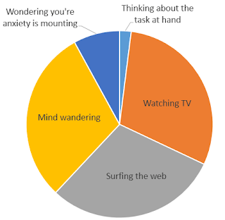

Motto: This Turned Out to be a Monster
I’d like to thank my local library and the various apps (one, two, three that connect with it for increasing my reading throughput by roughly 95%. Gillespedia has 9 book reports now… sooner or later I’ll figure out a way to make them look good. Right now Gillespedia is basically a link to the public-facing portion of my Notion notes.
{kind=link}
This Column has been dogging me for weeks. I’m sure it will feel good when it’s finished.
Mindfulness.
Being present.
Intentionality.
Buzzwords.
What do they actually mean? The concept of “mindfulness” has been getting more and more popular. I’ve seen tons books aimed at mindfulness, telling you it’s the solution to all of life’s biggest problems - depression, anxiety, dissatisfaction. The use of the term in marketing drove a Buddhist teacher to coin the term “McMindfulness”, describing the commercialization of the philosophy. I’m not going to sit here and try to define any of these terms or say that I know anything about them; but I do think the concepts I’m about to cover are at least tangentially related to what the essence of mindfulness, presence, and intentionality are all about.
Manageable Stress
It feels bad to be stressed out. It feels worse to be stressed out about something you can’t do anything about. It feels worst when you’re stressed out by a litany of things all unfairly converging on you at the same time, bringing you down in concert with one another like they were a squad of highly trained Navy SEALs here to wreck your day.
- Your homework is due.
- At the same time you run out of groceries.
- At the same time your car’s check engine light comes on.
- At the same time your phone is dying.
- At the same time you realize this light cough you’ve had is turning into a full-blown head cold.
Wouldn’t it be great if it all just, went away?
No stress forever. Can you imagine?
You know what? No stress can be just as bad as too much stress. No stress is good for a while, but after a certain point - you’ll start to go crazy. You’ll start to develop symptoms of depression. You’ll start to find little stressors that never used to bother you.
Without rest, a man cannot work; without work, the rest does not give you any benefit. - proverb
I think the best thing you can hope for is to have the right amount of stress. A life with no problems is not possible. If you have no problems for long enough, you’re going to find you have one really big problem and it’s developing between your ears in the spot of your human brain that says “hey, go solve a problem”. Humans were not designed to be content with nothing changing long-term. We see problems. We solve them. We feel good about having solved them, then move onto the next problems. There’s almost nothing as universally satisfying as solving a problem. If you’re lucky, or if you’ve managed your life well, you can have the right kind of problems. The ones that are fun to solve. The ones that can really make a difference.
Life = Time x Energy
It’s a cliche these days to say “life isn’t measured in seconds”. While that’s almost certainly true, I think it’s up to the individual to define life. For me, it feels like life is roughly equal to the things I spend the most time and energy doing. Stuff I don’t do regularly and stuff I don’t care about sort of just fall by the wayside. At the end of the day, I don’t think about the number of seconds I spent bored or whatever amusing thing I saw on TV… I choose to define life by those things that ignite my passion, or at least capture my full attention. Those are the things that make up Aaron.
Note that “energy” could probably be substituted with “focus”. Focus is just the energy of the domain of the mind. Also note that, while money isn’t part of the equation, it does expand the realm of opportunities from which you can choose to spend your time & energy.
Getting Things Done
Solving problems is inherently a good, satisfying feeling. Doing that thing you have to get done feels good. It’s not only the having it done afterward that feels good, it is often the actual act of doing the thing that feels good. Even if that thing is renewing your driver’s license. If you’re doing it for a reason, you can find some level of satisfaction in the task.
To that end, it’s good to truly understand the things you have to do. What tasks do you have? Why do you have them? What are the accomplishing? How do they relate to one another? The best way to know these things is to manage and keep track of your tasks by putting them in a list.
- Lists allow you to make logical connections between tasks.
- Lists can help make clear the meaning behind the task.
- Lists ensure nothing important falls off the table or through the cracks.
Organization is about having a place for everything, and everything in it’s place. Organization of information essentially boils down to “make a list” and eventually “make a list of your lists”.
To have an organized personal task-killing system, you should have a primary Inbox. A temporary holding place where tasks can land until you’ve managed them. You managed them by doing them, scheduling them, and/or organizing them in the context of a set of related tasks (i.e. - adding them to a project’s task list).
There one more benefit to be reaped by a person with an Inbox… an Inbox can free your mind. If you remember you have to get your engine light checked out while you’re looking for cold & flu medicine, it will be a distraction. Distractions are stressful. Worse, it can be a distraction that won’t go away - because you’ll have the nagging feeling of unresolved tasks, loose ends to one string in a mess of strings all knotted up between the different areas of your life. Now you’re distraction that won’t go away is a stressor that won’t go away. If you have an inbox that you trust and you write down “search for repair shops”, and “make appointment to get engine light checked”, suddenly you’ll find your mind is free to move on to other things.
The Weekly Review
In order to truly trust that your Inbox and task management list system will do its job, you need to review it regularly. The Inbox can be managed on an hour-by-hour basis, but at least once a week it is good to sit down and intentionally and systematically look at everything on every list you have. Do you need to do something about it right now? Do you need to schedule it? Is it still relevant?
Honestly I can, could, and should write an entire post on the concept of a “Weekly Review”. Maybe I’ll add this idea to my “Column Topics” list. In the meantime, you can read a fellow (much better than I) blogger’s takes on the Weekly Review.
Monotasking
It is incredibly difficult to do more than one thing at a time. Some people have said it’s outright impossible and that true multitasking is a myth. I’m not sure I fully believe that, but I do fully believe that doing one thing at a time is almost always going to be more rewarding and produce better work.
Don’t half-ass two things. Whole-ass one thing. - Nick Offerman
If you were stuck for an evening in a blank white room with a pencil and a piece of paper with the heading “In the next 5 years…”, I believe you’d produce a pretty good 5 year plan. If you were stuck in the same room with a pencil, a piece of paper with the heading “in the next 5 years…”, and a social media-connected computer and a television, I believe you’d sort of half think about what you want to do in the future for a bit, then half pay attention to your computer and half watch whatever was on the TV.
Distraction & Minimalism
There’s a problem with the sentence above this section heading. I said you’d sort of do one thing while half doing another and half doing a 3rd. Those numbers don’t add up. I think more accurate figure would look something like this:
 |
|---|
| While making this graphic, “Wondering why you’re anxious” and “Wondering why your anxiety is mounting” somehow became “Wondering you’re anxiety is mounting”. Now fixing it would take too much energy. |
{kind=link}
The thing you’re supposed to be doing is barely there, but the things you think you’re doing instead don’t actually make up the rest of the pie… you’re not half doing two things. You’re 30% doing two things, and the other 40% of your mind and attention are aimlessly wandering around. There’s a time and a place for aimlessly wandering attention… but when you’ve got something that you’re actively trying to get done - that’s not the time.
I said earlier it feels good to get things done. It feels great to get things done when you’re using your entire brain, through consistently maintained focus. If you’re truly focused on a task, everything else in the world sort of melts away. Other problems don’t exist. Time doesn’t pass. You’re in the zone. You’re in what Mihaly Csikszentmihalyi calls “flow”. Doing what Cal Newport calls “Deep Work”. That’s a great feeling - and it’s a feeling I know and crave decently often.
Distraction & Boredom
You can’t sustain flow if you are distracted out of it. If you’re solving a math problem or way deep into the code and your phone goes off saying an old friend liked your most recent Instagram, suddenly you find yourself wondering “why did he like that picture? was he just wanting to make contact or was it something about the photo itself? What was the photo again?” This whole train of thought probably would only take a few seconds… but it would pull you out of a spot that takes several minutes to get back into.
Worse yet, we are constantly distracted. We are constantly receiving stimulation from various screens and alarms that we carry in our pockets or on our wrists. (You can see for yourself just how bad it is with the digital well-being feature on your smartphone… or install RescueTime on your phone & computer to get a more complete view.) We, as a culture, have been working to eradicate boredom from our lives… and that’s not a good thing. Boredom is unpleasant. I’m reminded of a psychological study in which study participants were left in a boring room with a button that shocked them. They weren’t to “entertain themselves with their own thoughts” and that pressing the button would give them a mild, but still painful shock. Eventually, nearly half of those in the study pushed the button. One guy pushed it 190 times, apparently.
And yet, boredom is one of the base states that our brains have evolved around. It activates a portion of the brain called the “neutral” circuit, which may be a key portion of the brain when it comes to laterally thinking about you and your position in the world. Some of my best revelations have come to me only after long periods of relatively low stimulation.
You won’t go anywhere if your mind isn’t free to wander from time to time.
Minimalism
Minimalism is often misunderstood. Minimalism isn’t about getting rid of everything. It’s not about not appreciating things. It’s about really knowing what things you do appreciate, and not letting other things that don’t cultivate that same sense of appreciation (or “Spark Joy” in Mari Kondo’s words) rob you of your time and energy. It may not seem like having too many pairs of shoes would rob you of time and energy, but stuff has a way of doing that.
It’s a bit embarrassing as a 31 year old to quote Fight Club in a serious context, but I am reminded of the line from (I think only) the movie:
The things you own end up owning you. - Tyler Durden
Maintenance is not fun. It’s necessary to sustain an object’s utility, but it is often times just a chore to do. If you have a lot of objects, especially a lot of similar objects achieving similar purposes, each one is diluted by the existence of the others. The problem is that, unfortunately, the law of diminishing returns only applies to the benefits of the thing you have a lot of… it doesn’t necessarily similarly apply to the maintenance costs (time/energy/money) of those things. Minimalists don’t under-appreciate stuff. The appreciate stuff more than regular people, and respect the role of that stuff in their lives.
Minimalism extends to more than just physical possessions. Digital minimalism is all about being intentional with the apps and services you regularly maintain. I am not a Facebook user. Not because I’m holier-than-thou, but because the kind of expression I like to produce doesn’t go well on a Facebook… it goes here. The fewer platforms you’re on, the fewer chances you’ll have of being pulled away from some high-value activity to manage some low-value notification on your phone.
This month’s 30 Day Challenge is all about being more intentional with my phone and computer. I haven’t been on Reddit in over a week… and look at me getting around to actually writing this beast of a Column.
The Hedonic Treadmill
If you’ve never heard of the Hedonic Treadmill, here’s a quick definition from Wikipedia:
The hedonic treadmill, also known as hedonic adaptation, is the observed tendency of humans to quickly return to a relatively stable level of happiness despite major positive or negative events or life changes.
The reason I’ve think about the Hedonic Treadmill is that I’ve had enough life experiences now to say that I can appreciate it. I’ve gone to college. Got a job. Got married. Had a kid. Bought a house. And through it all… pretty much I’ve felt like the same old Aaron. My baseline for comfort and joy has absolutely changed… but my relative day-to-day levels of happiness are probably on par with what they’ve always been. Luckily, I’m pre-disposed to being generally pretty happy.
Alternatively you could say “of course you’re happy you moron. Did you even read this? Look at the list of things you just said. Shut up.” That’s fair. I bring up the Hedonic Treadmill mostly because it will come into play later.
Stoicism
Stoicism is all about knowing the natural human experience and accepting it for what it is. A stoic does not concern himself with troubles he has no power to resolve. A stoic is not overly worried about coming pain, nor do they expend great efforts in the pursuit of pleasure. I think of stoics as incredibly pragmatic naturalists, whose believe heavily in maintaining a healthy balance in all things. They seek understanding, and believe that true happiness and contentment come from seeing their place in the bigger picture. A stoic wouldn’t be upset by the knowledge that he is on the Hedonic Treadmill. I think I’m naturally fairly stoic, and aspire to be moreso.
Utopia
Stoicism is all well and good - it’s nice not to have to worried with constantly being pursuing pleasure and avoiding pain… but man wouldn’t it be good if we just lived in a world where pleasure was abound and pain was all-but-eradicated?
No such world can possibly exist.
Not one filled with humans, at least.
Humans, as we know them today, come from a long evolutionary line of animals that saw problems in and with their environment, and worked to resolve those. The ones who did this most effectively were given a selective advantage and passed on their genes more frequently. As generations progress and progress, it becomes more of an in-grained tendency pre-built in all of us.
As I’ve already talked about, if take away all the known problems, we humans will invent new ones. That’s what we do. If you are given constant joy and stimulation and back rubs or whatever… you’ll stop appreciating any of it. The Hedonic Treadmill will put you right back to that baseline - and worse yet, how do you go up from there?
So if Utopia is impossible, and every solved problem just leads to new problems, should we all just give up?
The Merger of Biotech and Infotech
I think there’s hope for a (nearly) universally perfect society in our future… way out in the horizon. Or maybe that’s mass catastrophe on a scale we’ve never seen.
Who knows.
This is largely in response to a couple of currently on-going revolutions in biological technology and information technology.
Biotech is creating more and more advanced treatments for disease. The average life expectancy is going up, and we expect that trend to continue. Also - we are developing sensors that are getting closer and closer to achieving direct, real-time measurements of the human brain. Seriously. Along with those enhanced sensors, we are more and more better at understanding the levers that drive human emotions and behavior.
{kind=link}
At the same time, Infotech has seen an absolute explosion in recent years in machine learning and computer intelligence. We went from a human vs machine rivalry in chess that lasted nearly 30 years before humans were truly left in the dust to a computer that taught itself how to play Go in about a year. Moreover, the machines that are currently the top-ranked “Go” players in the world learned how to play 100% by themselves. Meanwhile, big data has become more and more pervasive in its use. Exponentially more data is generated every decade. Decades aren’t even the right timeframe for this, each day we are producing 2.5 quintillion bytes of data. That’s 2.5EB. You’ve never seen “EB” before because it’s Exabytes… a level of data that’s incredibly massive. Wolfram|Alpha estimates that figure to be roughly twice the amount of information carried in every word ever spoken by anyone.
{kind=link}
Now think about the combination of biotech and infotech. Right now artificial intelligence is tagging cats in our pictures for us… but soon it may very well be actively implementing optimizations in the drug cocktails or environmental stimuli that it sees best fit to soothe an ailing brain. We could quite literally maximize the human experience. We could figure out a way off the Hedonic Treadmill and make actual consistent and forward progress that builds upon itself with time… and we’ll have time, because we’ll have figured out how to stop unnecessary deaths from disease. Or possibly we will have figured out how to cure death altogether, either through some miracle biological means or through the passing of human consciousness from our biological “wetware” to silicon hardware. If what makes you you is uploaded into a chip, and that chip is capable of running off energy directly from the electrical grid (or, say, the sun or any other renewable energy source), you could be stored in RAM, put on a spaceship, and sent throughout the galaxy with a fleet of robot shells that you could be distilled into when you reach your destination on planet whatever. It doesn’t matter if it takes 100s of thousands of years to get there, to you it might be the blink of an eye… and suddenly humanity has the entire universe as its playground. Our immortal souls are distributed throughout the universe, making use of all available energy and matter in the universe, making the whole of humanity effectively God.
Or, more likely, we’ll figure out a way to use these technologies to wipe ourselves out of existence. Who knows.
Sleep well. I’m glad this one is done.
Top 5: Productivity Books I’ve Read & What They Say
5. The Bullet Journal Method by Ryder Carol
Surprisingly a lot of philosophical stuff. The Bullet Journal Method does teach the actual Bullet Journal Method (a particular approach to life management via dot-grid journals), but also dedicates probably ~1/2 the book to topics such as “happiness”, “meaning”, and “imperfection”.
4. Bored and Brilliant by Manoush Zomorodi
We have nearly eradicated boredom from our lives with the invention of the smart phone & other technologies. Boredom is a necessary part of a happy human. It allows us to think deeply and creatively. You can and should cultivate more boredom in your life through a set of 7 challenges, “don’t use your phone while in motion” for example.
3. The Power of Habit by Charles Duhigg
Habits are important. The are comprised of a cue, a routine, and a reward. Pay attention to your habits. It is usually possible to replace bad habits with good ones by finding a different routine to apply after a cue to achieve a similar reward.
2. Deep Work by Cal Newport
Deep Work, a.k.a. “Flow” is working with an intense focus on a well-defined discrete goal, away from distraction. Deep Work is only getting more valuable and more rare. Deep Work also brings a great amount of satisfaction into your life. The book suggests several methods to improve the quantity and quality of your deep work. Bonus - I also read Cal Newport’s “Digital Minimalism”, which is a very-related book that expands on “intentionality” and suggests more ways to ensure you have time to do deep work. It’s very similar in message to Manoush Zomorodi’s “Bored and Brilliant”.
1. Getting Things Done by David Allen
Specify tasks in terms of discrete actions, put them in a list, look at the list frequently enough to trust it. Don’t use your head to remember stuff. Cultivate an “external brain”, which basically consists of lists & logs. Goes very well with Ryder Carol’s “The Bullet Journal Method”. David Allen actually wrote a forward in “The Bullet Journal Method” talking about how good it is.
Quote:
“Elon Musk can’t dunk”
- Casually Explained, who is reminding you that nobody has everything -
“You don’t rise to the occasion, you fall to your level of training.”
- J Bridger, not related to the content of this post, but a great quote -